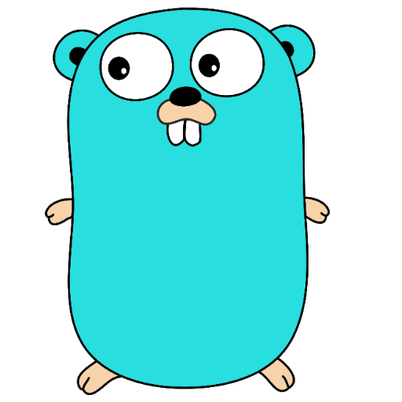

Yohei Namba
about

I am an engineer in Japan.
I major in computer science in Graduate School and I am working at IT company as an intenship student.
Keio University (April 2018 – March 2022)
・Bachelor of Engineering
Keio University Graduate School (April 2022 - now)
・Center for Information and Computer Science Nishi Laboratory
works

Social Databank, Inc. (April 2021 – now)
• Developed frontend and backend system with Laravel and Vue.js
- Designed the architecture by using Domain Driven Design.
- Containerized infrastructure and designed Infrastructure as Code by using Terraform.
- Designed AWS architecture for multi-single tenant application.
• Leading an infrastructure team in the intern organization that helps deployments of projects and managed them by code with Terraform and CircleCI.

Woven Alpha, Inc.(September 2022 – November 2022)
・Contributed to City Platform Team
- Discussed how to test IaC (Kubernetes Operator for Istio and Terraform) and integrated them and CI pipeline on CI cluster.
- Implemented new features to Kubernetes operator with KeyCloak and Vault.

DMM.com group (December 2022 – Janualy 2023)
・developed auth server in the microservice platform with Go(Chi) - refacotred the code based on clean architecture. - made unit tests for handler and context management
Cyber Agent, Inc. (Janualy 2023-)
・developing PipeCD that supports CD for Kubernetes, ECS, lambda.
My contributions
- developed custom templating to support jeonnet and cue
- developed custom stage job to support sam and cloud formation
- developed a feature to show last used time of API keys and cache strategy of that.
- improved kubernetes drift detection

Nishi Laboratory (April 2021 – March 2024)
・Demonstration-based research and development to solve regional issues through data linkage and utilization
- Developing a mechanism that manages data paths on an edge area
- Implementing authorization system for tags and making it efficient
- Attend International Conference(reviewed)
- Personal Data Access and Distribution Management Extension to FIWARE (IECON 2022)
・Managing on-premise server in the lab.
- installing
- arraging networking
Private Circle Application
・developed algorithm to count the number of band each member join by GAS
・Create AWS lambda architecture
blog(in Japanese)
works(Japanese)
Social Databank, Inc. (April 2021 – now)
運用管理部インターン生
バックエンド
- オンライン定期券システムのバックエンドとフロントエンドを開発しました。
- 要件定義を行い、ドメイン駆動設計でデザインしました。(Laravel, Vue)
- サービス横展開のためのインフラを設計構築しました。(Terraform)
- タスク管理のためのkanban運用の構築を行いました。(Notion)
インフラ
- AWSの権限をコードで整理して管理しました。(Terraform)
- インターン内プロジェクトのインフラのコード化とCI/CDパイプラインの構築を行い、デプロイリードタイムを削減しました。(CircleCI)
- 他インターン生に向けてインフラの教育を行いました。
Woven Alpha, Inc.(September 2022 – November 2022)
City Platformチームインターン生
- TerraformのEnd to Endテストを検討し、構築しました。(Go, Terraform,terratest)
- Kubernetes Operatorの機能拡張を行い、HashiCorp VaultやKeyCloakとの連携を容易にしました。(Kubernetes, Go, Kubebuilder)
- Kubernetes OperatorのためのEnd to Endテストを検討し、CIパイプラインを構築しました。(TypeScript, GithubActions)
- 全て英語でこれらの議論を行いました。
DMM.com group (December 2022 – Janualy 2023)
マイクロサービスアーキテクチャチームインターン生
- 認証認可機能のサーバーサイド開発を行いました。
Cyber Agent, Inc. (Janualy 2023-)
Developer Productivity室インターン生(CA Tech Mission)
継続的delivery infrastructureツールPipeCD(OSS) の開発
My contributions
- CUEをサポートするためにtemplatingツールの外部アドオンを実装しました
- Control PlaneをGKEだけでなくECSに対応しました
- Envoyの接続エラーを修正しました
- SAMをサポートするためにユーザー定義の実行ステージを追加しました
- APIKey使用履歴の表示機能とそのキャッシュ戦略を設計しました
- Kubernetesの構成ドリフトの検知を改善しました
Nishi Laboratory (April 2021 – March 2024)
データ連携・利活用による地域課題解決のための実証型研究開発
- エッジ上の情報流通経路を管理するために、パケット内の個人情報をもとにパケットにタグをつけ管理する仕組みを研究しています。
- 都市OSの要件について議論をしています。
- ネットワークレイヤでタグシステムの認証機能について実装しています。
査読付きの国際学会で発表しました
- Personal Data Access and Distribution Management Extension to FIWARE (IECON 2022)
- paper
研究室内オンプレサーバーの管理
- 配線を整理し、ボトルネックを特定し、速度改善を行いました。
- 新機器導入を行いました。
Private Circle Application
skill

PHP(Laravel)
developed backend

Go
developed backend(chi), AWS CDK, kubebuilder

JavaScript
developed frontend(Vue, React)

Python
Flask, Pytorch, Mininet

AWS
EC2, ECS, EKS, lambda

GCP
GKE, Cloud Run, Skaffold
Terraform
AWS, Terratest

Kubernetes
ServiceMesh(Istio), Operator, FluxCD, Tilt, vCluster

C,C++
networking, algorithm

MySQL, PostgreSQL, DynamoDB, MongoDB
Other Tools
CircleCI, Github Actions(Self-hosted), Swagger(Open API), gRPC, Hashicorp Vault, KeyCloak